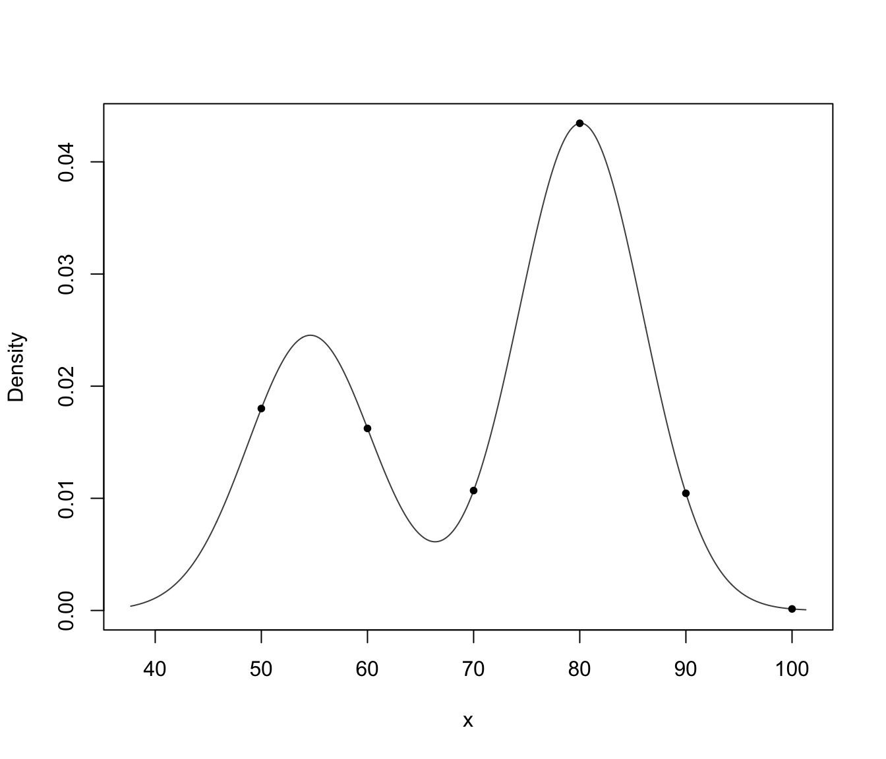

Density estimate of multivariate observations by Gaussian finite mixture modeling
predict.densityMclust.RdCompute density estimation for multivariate observations based on Gaussian finite mixture models estimated by densityMclust.
Arguments
- object
an object of class
'densityMclust'resulting from a call todensityMclust.- newdata
a vector, a data frame or matrix giving the data. If missing the density is computed for the input data obtained from the call to
densityMclust.- what
a character string specifying what to retrieve:
"dens"returns a vector of values for the mixture density;"cdens"returns a matrix of component densities for each mixture component (along the columns);"z"returns a matrix of conditional probabilities of each data point to belong to a mixture component.- logarithm
A logical value indicating whether or not the logarithm of the density or component densities should be returned.
- ...
further arguments passed to or from other methods.
Value
Returns a vector or a matrix of densities evaluated at newdata depending on the argument what (see above).
Examples
# \donttest{
x <- faithful$waiting
dens <- densityMclust(x, plot = FALSE)
x0 <- seq(50, 100, by = 10)
d0 <- predict(dens, x0)
plot(dens, what = "density")
points(x0, d0, pch = 20)

# }